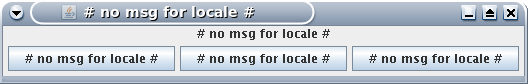

See: Description
| Interface | Description |
|---|---|
| NlsArgumentParser | |
| NlsBundle |
This is the marker interface for all "resource-bundles" for this native language support.
|
| NlsBundleFactory | |
| NlsBundleWithLookup | |
| NlsFormatter<O> |
This is the interface for a formatter of an arbitrary object in a localized way.
|
| NlsFormatterManager |
This is the interface for a manager of
NlsFormatters. |
| NlsFormatterPlugin<O> |
This interface extends
NlsFormatter with the methods required to register this automatically as
plugin via injection. |
| NlsLocalizer |
This is the interface for a localizer that simplifies the localization of messages via
NlsMessages. |
| NlsMessage |
This is the interface for an internationalized message.
|
| NlsMessageFactory |
This is the interface for a factory used to create instances of
NlsMessage. |
| NlsMessageFormatter |
This is the interface for a formatter of a message-text.
|
| NlsMessageFormatterFactory |
This is the interface to create an
NlsFormatter. |
| NlsMessageLookup |
This interface provides a
generic lookup of a NlsMessage. |
| NlsObject |
This is the interface for an object with native language support.
|
| NlsResourceBundle |
This is an interface abstracts from
ResourceBundle to support features like NlsBundle. |
| NlsResourceBundleRequestor |
This is the interface of a component to
request
NlsResourceBundles. |
| NlsResourceLocator | |
| NlsTemplate |
This interface represents the template for an internationalized text that can be
translated to a given Locale. |
| NlsTemplateResolver |
This is the interface for
resolving NlsTemplate for translating a
text-message to a Locale-specific language. |
| Class | Description |
|---|---|
| NlsAccess |
This is a static accessor for central components supporting native language support (NLS).
|
| NlsArgument |
This class represents an argument of an
NlsMessage. |
| Annotation Type | Description |
|---|---|
| NlsBundleKey | |
| NlsBundleMessage |
This
required annotation is used to define the
internationalized message for a method of an NlsBundle
interface. |
| NlsBundleOptions |
This optional annotation is used to define a different name for an
NlsBundle interface. |

Java already comes with great i18n support. But IMHO there are some tiny peaces missing to complete the great puzzle
of NLS:
There is almost no support if an application needs NLS that is handling multiple users with different locales
concurrently (e.g. a web-application).
You will typically store your messages in a ResourceBundle. Now if you store the technical key of
the bundle in a message or exception the receiver needs the proper ResourceBundle to decode it or
he ends up with a cryptic message he can NOT understand (e.g. as illustrated by the screenshot).
On the other hand you need to know the locale of the receiver to do the l10n when creating the message or exception
with the proper text. This may lead to sick design such as static hacks. Also if you have to translate the text at
the creation of the message every receiver has to live with this language. Especially for logging this is a big
problem. An operator will be lost in space if he gets such logfiles:
[2000-01-31 23:59:00,000][ERROR][n.s.m.u.n.a.MasterService] The given value (256) has to be in the range from 0 to 100. [2000-01-31 23:59:01,000][WARN ][n.s.m.u.n.a.MasterService] Der Benutzername oder das Passwort sind ungültig. [2000-01-31 23:59:02,000][ERROR][n.s.m.u.n.a.MasterService] 文件不存在。 [2000-01-31 23:59:03,000][FATAL][n.s.m.u.n.a.MasterService] ข้อผิดพลาดที่ไม่คาดคิดได้เกิดขึ้น
NlsMessage. For exceptions there is additional support via
NlsException and NlsRuntimeException.
Here is an example to clarify the idea of NlsMessage: The i18n message is
"Hi {name}! How are you?" and the dynamic argument is the users name e.g. "Lilli". Now if we store these informations
together we have all we need. To get the localized message we simply translate the i18n message to the proper
language and then fill in the arguments. If we can NOT translate we always have the message in default language which
is "Hi Lilli! How are you?". NlsBundleNlsBundle. For each message you define a method that takes the
arguments to fill in and returns an NlsMessage. Via annotations you provide the
default message for each method.
package foo.bar; public interface NlsBundleFooBarRoot extendsFrom your code you now can do this:NlsBundle{ @NlsBundleMessage("Hi {name}! How are you?")NlsMessagemessageSayHi(@Named("name") String name); @NlsBundleMessage("Sorry. The login \"{login}\" is already in use. Please choose a different login.")NlsMessageerrorLoginInUse(@Named("login") String login); }
String userName = "Lilli";For the error message create an exception like this:NlsMessagemsg =NlsAccess.getBundleFactory().createBundle(NlsBundleFooBarRoot.class).messageSayHi(userName); String textDefault = msg.getLocalizedMessage()); String textDe = msg.getLocalizedMessage(Locale.GERMANY));
public class LoginAlreadyInUseException extendsFor further details seeNlsRuntimeException{ public LoginAlreadyInUseException(String usedLogin) { super(createBundle(NlsBundleFooBarRoot.class).errorLoginInUse(usedLogin)); } }
NlsBundle. foo/bar/NlsBundleFooBar_de.properties with this content:
messageSayHi = Hallo {name}! Wie geht es Dir?
errorLoginInUse = Es tut uns leid. Das Login "{login}" ist bereits vergeben. Bitte wählen Sie ein anderes Login.
Unlike the Java defaults, here resource bundles are read in UTF-8 encoding and allow to use named parameters as
alternative to indexes what makes it easier for localizers. There are even more advanced features such as recursive
translation of arguments and choice format type. See NlsMessage for further details.
Also our solution supports specific environments such as GWT (google web toolkit) what makes it very interoperable.
In order to support you with creating and maintaining the localized properties, this solution also comes with the
net.sf.mmm.util.nls.base.ResourceBundleSynchronizer. NlsMessage
and that this approach is GWT compatible when using mmm-util-gwt. However, there is still our legacy
approach.
AbstractResourceBundleAbstractResourceBundle that declares public string constants:
package foo.bar;
public class FooBarResourceBundle extends AbstractResourceBundle {
public static final String MSG_SAY_HI = "Hi {name}! How are you?";
public static final String ERR_LOGIN_IN_USE = "Sorry. The login \"{login}\" is " +
"already in use. Please choose a different login.";
}
From your code you only need to create the NlsMessage using this
constants:
String userName = "Lilli";For the error message create an exception like this:NlsMessagemsg =NlsAccess.getFactory().create(FooBarResourceBundle.MSG_SAY_HI, "name", userName); String textDefault = msg.getLocalizedMessage()); String textDe = msg.getLocalizedMessage(Locale.GERMANY));
public class LoginAlreadyInUseException extends NlsRuntimeException {
public LoginAlreadyInUseException(String usedLogin) {
super(MyResourceBundle.ERR_LOGIN_IN_USE, toMap(KEY_NAME, usedLogin));
}
}
For the automatic reverse-lookup create the file META-INF/net.sf.mmm/nls-bundles with the fully qualified
name of your bundle-class (foo.bar.FooBarResourceBundle) as content. net.sf.mmm.util.nls.base.ResourceBundleSynchronizer.
UserSessionProvider).
NlsMessage allows to store an internationalized message together with actual
arguments to fill in.NlsMessages.NlsMessage for advanced examples.NlsMessage.getLocalizedMessage(java.util.Locale).NlsThrowable.Copyright © 2001–2016 mmm-Team. All rights reserved.